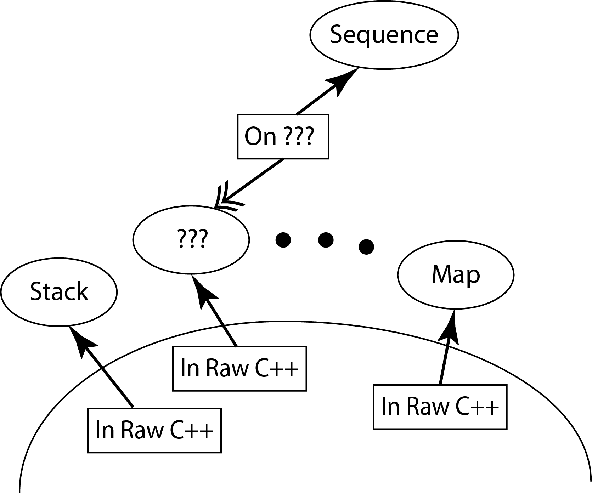
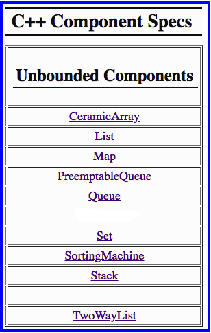
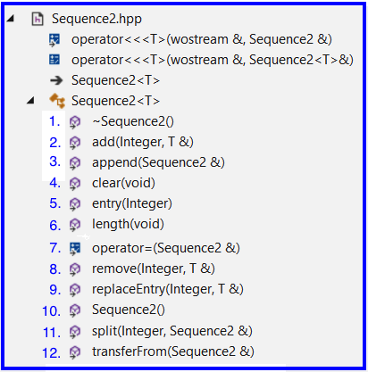

Layering a Component
0. Reference material
1. Setup
1.1 Get the L5Starter Download
- Download L5Starter.zip to your machine - to be used on a subsequent steps
1.2 Copy Sequence2.hpp from the L5Starter.zip
- Inside L5Starter.zip is a file named Sequence2.hpp
- For this assignment you will be making changes to this file
- Copy this file to the following folder on in your local repo: CppDevSp21/components/include/Sequence
2. L5 Statement of Work
2.1 Primary Objectives
The primary objective of this lab is to provide you experience with:
- Layering a component (e.g., Sequence) on another already existing component (e.g., Stack).
- Where you choose the underlying component upon which to do the layering
- Where you choose the correspondence between the component being developed (Sequence in this case) and the underlying data structures
|
 |
2.2 Specifics
Steps:
- Start Visual Studio
- Open project L5Driver
- Find and open Sequence2.hpp
- Choose a component from the list shown to the right for your your internal representation
- Your component choice must come from the list to the right
- You can find their specs on the C++ Component Specs web page
- You can find each of these components in sub-folders in: CppDevSp21/components/include
- Create the correspondence between abstract Sequence values and your internal representations
- Implement each Sequence2 member function - use the L5Driver command interpreter to test your implementation
Hints:
- Reread the Component Layering slides from Week #4 on the CSSE373 Moodle site
- Reference the Sequence specifications
- Implement all of Sequence2's stubbed out member functions
- Look for the TODO comments in Sequence2.hpp
|
 |
Important Restrictions:
- Obey the correspondence - When implementing the member functions you must obey the correspondence internal contract
That means:
- assume that the correspondence holds when the member function is called
- guarantee that the correspondence holds when the member function exits
- Use Design by Contract - No defensive programming of Sequence's operations
- What this means is that the implementation of a Sequence operation must not contain code that checks to make sure that the Sequence operation was called correctly by the client
- No Cross Calling - None of Sequence's member functions are permitted to make calls to any of the other public Sequence member functions, i.e., no cross calling
- All Sequence operations should directly manipulate Sequence's data members
- Calling Down - is encouraged (but not required) by creating private member functions that capture code that starts to appear in multiple different places in your Sequence2 implementation. Do this to avoid the duplication of code
- No Recursion - None of Sequence's member functions are permitted to be recursive
- About Making Copies -
- When implementing Sequence2's operator = you must use the internal component's operator = to make a copy of the data members.
- Otherwise do not call operator = with the Sequence2 data members or with variables of type T.
3. Testing
- L5Driver testing first
- In the folder CppDevSp21/QueueDriver there is a sub-folder called TestScripts which contains .txt files.
- Use QueueDriver's test scripts as a guide for creating your own test scripts for Sequence
- If you develop your own command interpreter test scripts, and if you feel generous, please upload some (or all) of your test scripts to the Piazza for others to use
- L5R testing second
- L5R contains 6 test scripts for Sequence for 5 operations: constructor, clear, transferFrom, length, entry
- These test at the abstract level only and would work for any Sequence implementation
- Unfortunately the unit tests in L5R do not thoroughly test the Sequence2.hpp member functions
- Use your knowledge of developing unit test test scripts to create your own
- If you develop your own L5R test scripts, and if you feel generous, please upload some (or all) of your test scripts to the Piazza for others to use
- L5D testing third
- Since you are choosing your own internal representation, you will have to create your own unit tests that test against the internal representation
- If you decide to do this kind of testing, create a unit test project and configure it to run in Debug configuration
- You will need to modify Sequence2's operation << so that it outputs the values of your internal data structures when in Debug configuration - see List2.hpp or List3.hpp for an example
- Then take the 6 test scripts from L5R and modify them so that the assert statements test against your representation values
Develop Test Cases for Boundary Condition Testing:
- Boundaries that are at an "end" or "edge" of the container
- Good boundary condition testing in this case:
- Forces an insertion/deletion/lookup/etc. at all the edges
- Force an insertion/deletion/lookup/etc. 1 away from the edge
- Forces an insertion/deletion/lookup/etc. at least once somewhere "in the middle", i.e., not at an edge.
Although this is not testing a boundary, per se, a test for "in the middle" needs to be done

- Sequence add Example - let seq1 be the name of the sequence under test
- Add at position 0 of a non-empty sequence
- Add at position 1 of a non-empty sequence, where |seq1| >= 3
- Add at position |seq1| of a non-empty sequence
- Add at position |seq1| - 1 of a non-empty sequence, where |seq1| >= 3
- Add at position |seq1| / 2 of a non-empty sequence where |seq1| >= 2
My test cases:
When grading I will be running my own more complete set of unit tests that will systematically stress your member function implementations
4. Grading Guidelines
Failure of Your Submission to Correctly Compile - 100 out of 100 points
- If your submission does not compile correctly so that I cannot run my test cases, zero points will be earned
Violation of "Important Restrictions" (see above) - 40 points maximum
- 8 points each up to 40 points
Internal Representation and Correspondence - 10 points maximum
Includes:
- Your own internal representation (the #include'ing of the component and the use of typedef to create a named instance)
- The correspondence contract between abstract Sequence variable values and your internal representation
- Also, you if you choose to maintain a specific module level invariant, you must be documented also
Operation Implementations - 60 points maximum
6 points off for each incorrect operation listed in the check list below that does not meet its ensures clause, not to exceed 60 points

5. Submitting the Lab for Grading
Upload L5's completed Sequence2.hpp file to the L5 Moodle assignment